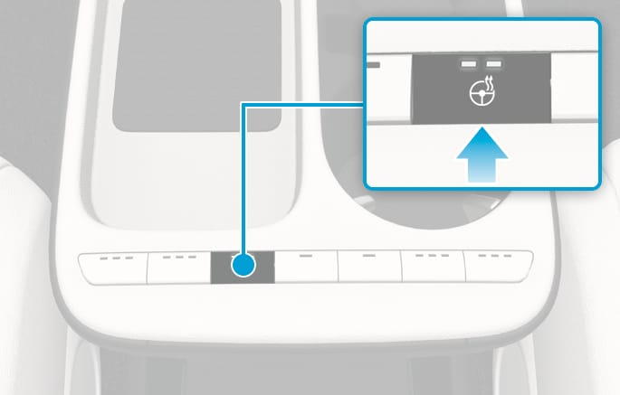
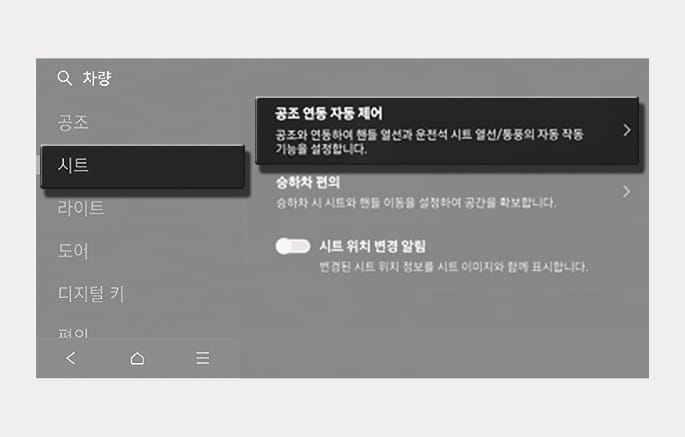

스티어링 휠 열선 사용하기
스티어링 휠이 차가울 때 스티어링 휠 열선을 켜면 손시림 없이 차량을 주행할 수 있습니다.
시동이 켜진 상태에서 스티어링 휠 열선 버튼을 누르면 표시등이 켜지면서 스티어링 휠 열선이 켜집니다.

2C_SteeringWheelWarmerButton
온도 조절하기
스티어링 휠 열선 버튼을 누를 때마다 OFF > 2단(강) > 1단(약) 순서로 온도가 조절됩니다.
-
1단에서 버튼을 누르면 OFF 상태로 돌아갑니다.
-
2단 설정 후 30분이 지나면 자동으로 1단으로 변경되며, 이후 사용자 조작이 없으면 시동을 끌 때까지 1단으로 유지됩니다.
운전석 공조 연동 자동 제어 설정하기

2C_AdjustSeatAVN
시동 시 차량 내부 및 외부의 온도에 따라 스티어링 휠 열선이 자동으로 조절되도록 설정할 수 있습니다.
인포테인먼트 시스템에서 설정 > 차량 > 시트 > 공조 연동 자동 제어 > 핸들 열선을 선택한 후 상세 항목을 설정하십시오.
-
스티어링 휠 열선 버튼을 눌러 수동으로 단계별 온도를 설정할 수도 있습니다.
-
스티어링 휠에 보조 핸들을 장착하거나 날카로운 물체로 그립 표면을 손상시키지 마십시오. 내부의 열선이 손상될 수 있습니다.
-
스티어링 휠을 세척할 때 페인트 희석제, 알코올, 가솔린 등의 유기 용제를 사용하지 마십시오. 내부의 열선 및 스티어링 휠 표면이 손상될 수 있습니다.
업데이트로 인해 인포테인먼트 시스템의 상세 설정이 변경될 수 있습니다. 자세한 설정 방법은 인포테인먼트 시스템 웹 매뉴얼을 참고하십시오.